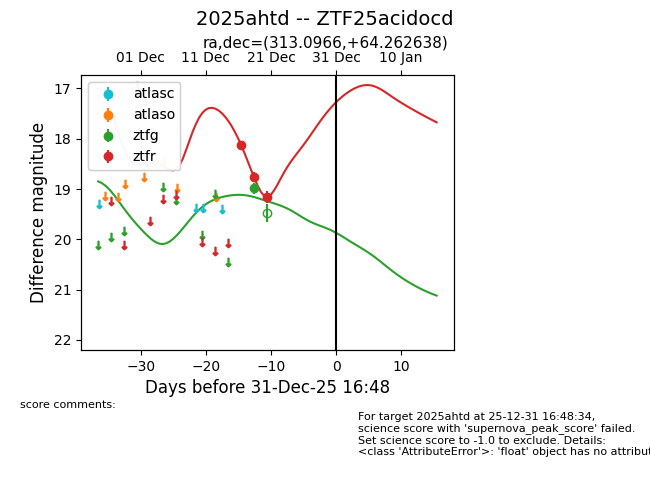
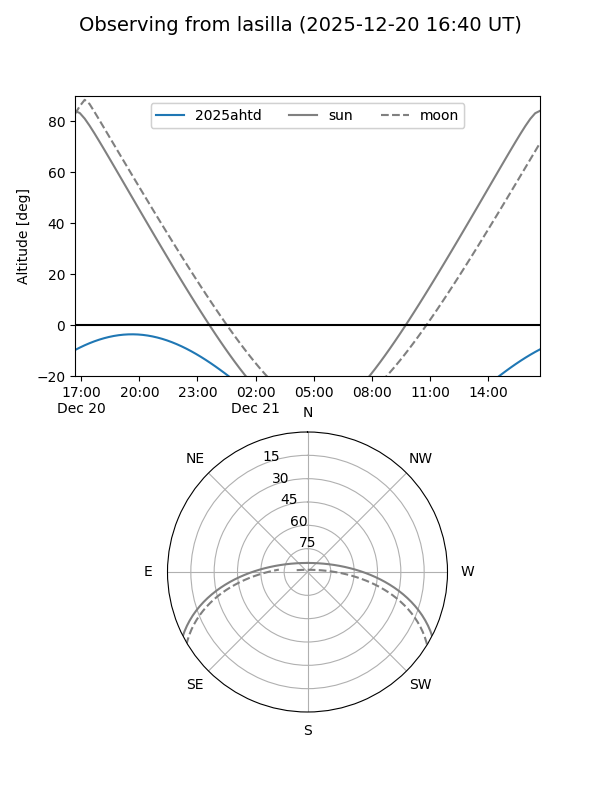
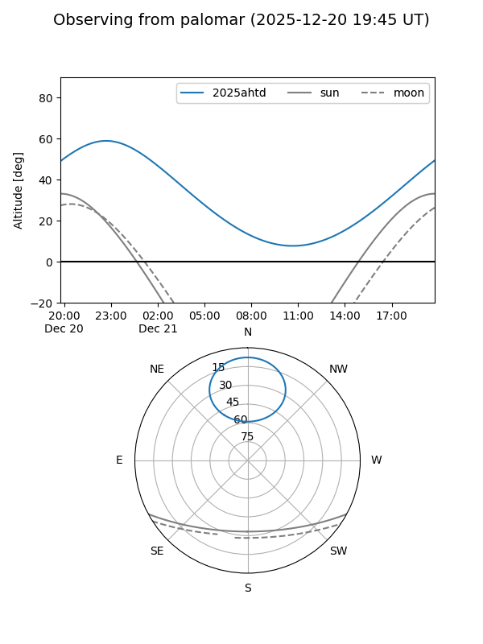
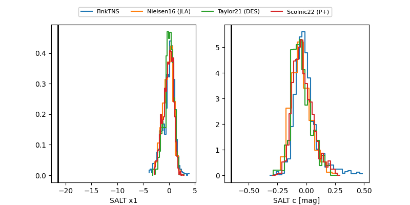

2025ahtd
Target 2025ahtd at 2025-12-21 02:03
Aliases and brokers:
FINK: fink-portal.org/ZTF25acidocd
Lasair: lasair-ztf.lsst.ac.uk/objects/ZTF25acidocd
ALeRCE: alerce.online/object/ZTF25acidocd
TNS: wis-tns.org/object/2025ahtd
YSE: ziggy.ucolick.org/yse/transient_detail/2025ahtd
alt names
ZTF25acidocd (ztf,fink_ztf)
2025ahtd (tns,yse)
Coordinates:
equatorial (ra, dec) = 313.0966,+64.26264
equatorial (HMS+DMS) = 20:52:23.18,+64:15:45.50
galactic (l, b) = (100.3348,+12.48165)
Flags:
likely cv
Photometry:
last ztfg=18.99, ztfr=18.76
1 ztfg, 2 ztfr detections
Lightcurve

Visibility


Additional plots
